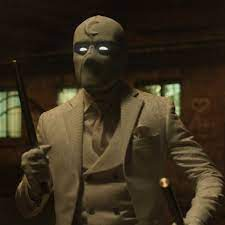
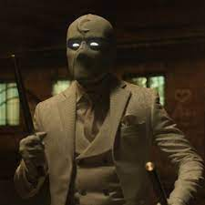

Moon Knight is a character appearing in American comic books published by Marvel Comics. Created by writer Doug Moench and artist Don Perlin, the character first appeared in Werewolf by Night #32 (August 1975).[1] The son of a rabbi, Marc Spector served as a Force Recon Marine and briefly as a CIA operative before becoming a mercenary alongside his friend Jean-Paul "Frenchie" DuChamp. During a job in Sudan, Spector is appalled when ruthless fellow mercenary Raoul Bushman attacks and kills archeologist Dr. Alraune in front of the man's daughter and colleague, Marlene Alraune. After fighting Bushman and being left for dead, a mortally wounded Spector reaches Alraune's recently unearthed tomb and is placed before a statue of the Egyptian moon god Khonshu. Spector dies, then suddenly revives, fully healed. He claims Khonshu wants him to be the "moon's knight", the left "Fist of Khonshu", redeeming his life of violence by now protecting and avenging the innocent. While early stories imply Spector is merely insane, it is later revealed Khonshu is real, one of several entities from the Othervoid (a dimension outside normal time and space) once worshipped by ancient Earth people. On his return to the United States, Spector invests his mercenary profits into becoming the crimefighter "Moon Knight", aided by Frenchie and Marlene Alraune, who becomes his lover and eventually the mother of his daughter. Along with his costumed alter ego, he primarily uses three other identities to gain information from different social circles: billionaire businessman Steven Grant, taxicab driver Jake Lockley, and suited detective and police consultant Mr. Knight. It is later revealed Moon Knight has dissociative identity disorder (DID) (incorrectly referred to as schizophrenia in some stories) and that the alters known as Grant and Lockley originally manifested during his childhood. Other subsequent alter egos who do not assume the Moon Knight identity have emerged at other points during his adulthood, including a werewolf-fighting astronaut; impersonators of Khonshu, Spider-Man, Wolverine, Captain America, Iron Man, and Echo; and a red-haired little girl known as the Inner Child (who first appeared in the Ultimate Marvel continuity). It is debated in different stories whether Spector has genuine DID due to childhood trauma or if his similar symptoms are the result of "brain damage" caused by his psychic connection to Khonshu, a connection compelling his personality to shift between the four major aspects of the moon god's multi-faceted nature ("the traveler", "the pathfinder", "the embracer", and "the defender of those who travel at night"). Khonshu claims he created a psychic connection with Spector, Grant, and Lockley when the latter were young, decades before they became Moon Knight.[2] In most of his stories, Moon Knight has no supernatural abilities beyond occasional visions of mystic insight. He relies on athletic ability, advanced technology, expert combat and detective skills, and a high tolerance for pain based on willpower, training, and experience. Since becoming Moon Knight, there have been multiple occasions when the character has died only to then be resurrected by Khonshu, implying he may now be effectively immortal until the moon god's protection is revoked (whether Khonshu has limitations on how often he can resurrect Spector is unknown). For a time, Moon Knight's strength and resistance to injury could reach superhuman levels depending on the phases of the moon, but this ability later vanished, while the Moon Knight identity is occasionally depicted as an independent alter ego of the others.[3] The character has made appearances in various media outside of comics, including animated series and video games. Oscar Isaac portrays Marc Spector / Moon Knight, Steven Grant / Mr. Knight, and Jake Lockley in the Marvel Cinematic Universe live-action television series Moon Knight (2022). Development In an interview, Doug Moench recalled the character's genesis: "Somebody mentioned in the office and suggested using the committee, and that I should bring The Committee back, and then I found out who The Committee were and thought, well they're really boring, I don't wanna use them. And then I thought, well wait a minute, how about, if The Committee hires a mercenary, to kill the werewolf. And I thought yeah that's a good idea then I create this new character and it won't be these boring guys in business suits, it would be a flashy character. So I said who is best to kill the werewolf ? Well someone who uses Silver weapons because Silver hurts the werewolf. And tied to the night because the werewolf only comes out at night, and I'll base this character on the Moon, because the Moon makes the werewolf change, and this is going to be the opposite of the werewolf, and as soon as I said the Moon I said, ooh I'll have a costume that's just like the Moon, just black and white, jet and silver, no color on the costume."[4] Don Perlin also commented on the creation of the character, "We were told we needed a costumed character in the book. So Doug and I created Moon Knight. I wanted the costume to be just black and white. Since he'd be on a color page, that would make him a little bit different. He had a silver baton he could use when he battled werewolves. See, he was hired to track down to kill the werewolf."[5]